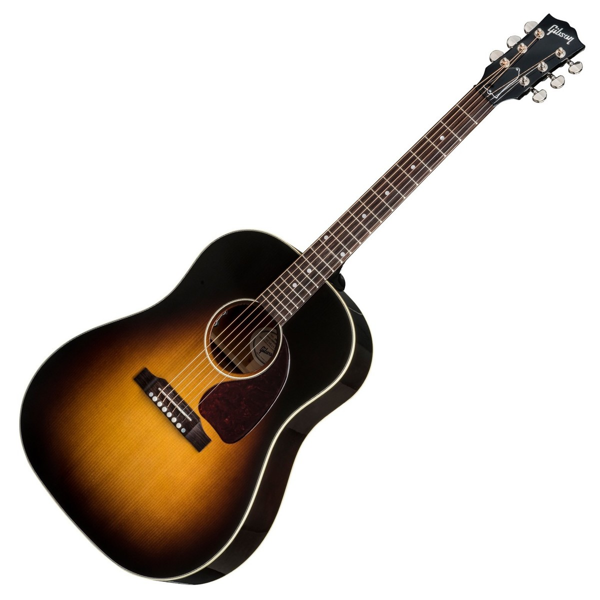
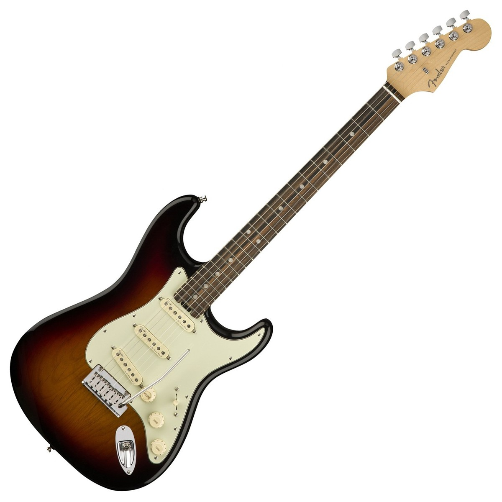

Back to first page
Guitars
introduction to guitars
- Gibson
- Fender
Gibson
-
Gibson Brands, Inc. (formerly Gibson Guitar Corporation) is an American manufacturer of guitars, other musical instruments, and consumer and professional electronics from Kalamazoo, Michigan and now based in Nashville, Tennessee. The company was formerly known as Gibson Guitar Corporation and renamed Gibson Brands, Inc. on June 11, 2013.[3][4]
Gibson sells guitars under a variety of brand names[5] and builds one of the world's most iconic guitars, the Gibson Les Paul. Many Gibson instruments are highly collectible. Gibson was at the forefront of innovation in acoustic guitars, especially in the big band era of the 1930s; the Gibson Super 400 was widely imitated. In 1952, Gibson introduced its first solid-body electric guitar, the Les Paul, which became its most popular guitar to date— designed by Ted McCarty and Les Paul.
In addition to guitars, Gibson offers consumer electronics through its subsidiaries Gibson Innovations (Philips brand), TEAC Corporation (TEAC and Esoteric brands), Onkyo Corporation (Onkyo and Pioneer brands), Cerwin Vega and Stanton,[6] as well as professional audio equipment from KRK Systems, pianos from their wholly owned subsidiary Baldwin Piano, and music software from Cakewalk. (See section #Instruments)
Orville Gibson founded the company in 1902 as the "Gibson Mandolin-Guitar Mfg. Co. Ltd." in Kalamazoo, Michigan, to make mandolin-family instruments.[1] Gibson invented archtop guitars by constructing the same type of carved, arched tops used on violins. By the 1930s, the company was also making flattop acoustic guitars, as well as one of the first commercially available hollow-body electric guitars, used and popularized by Charlie Christian. In 1944, Gibson was bought by Chicago Musical Instruments (CMI), which was acquired in 1969 by Panama-based conglomerate Ecuadorian Company Limited (ECL), that changed its name in the same year to Norlin Corporation. Gibson was owned by Norlin Corporation from 1969 to 1986. In 1986, the company was acquired by its present owners. Gibson is a privately held company that is owned by its chief executive officer Henry Juszkiewicz and its president David H. Berryman.

Fender
-
Fender Musical Instruments Corporation, kortweg Fender, is een Amerikaanse producent van muziekinstrumenten en muziekapparatuur. Het bedrijf is vooral bekend geworden als producent van de elektrische gitaar Stratocaster.
Kenmerkend voor Fender-gitaren is het element dat wordt gebruikt om de trillingen van de snaren op te vangen. Het gaat om zogenaamde "single coil"-elementen (één rijtje met poolstaafjes per element), in tegenstelling tot dual-coil-elementen ("humbuckers"). Het voordeel van de single-coil-elementen van Fender is een helderder geluid; het nadeel is dat dit type elementen nogal eens een zoemtoon produceert. Het karakteristiek lichtste Fendergeluid is afkomstig van de Telecaster (twee elementen); de Stratocaster (drie elementen) klinkt donkerder.
Fendergitaren en -versterkers worden wereldwijd gefabriceerd, onder andere in de Verenigde Staten, Mexico, Japan, Korea (Squier), Indonesië (Squier) en China (Fender en Squier).
Een Fender Rhodes-elektrische piano
Naast gitaren maakt Fender eveneens elektrische piano's. De Fender Rhodes is een van de bekendste elektrische piano's en wordt nog steeds veel gebruikt in de professionele muziekwereld.[bron?] In de jaren tachtig werden onder de naam Rhodes ook keyboards geproduceerd.
Fender maakt naast de eerder genoemde gitaren en piano's, ook gitaarversterkers.

Back up